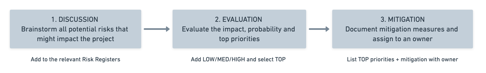

There are many risks that could impact our project cost, schedule, and performance - some of these could even lead to disputes.
In order to manage these risks we will carry out some early planning to catalog potential challenges and their mitigation measures. We will use the following three step process:
The discussion stage will involve quick online brainstorming sessions with the project team and stakeholders to identify risks. At this point, we are not looking to solve any problems - the goal is to identify as many possible scenarios that could negatively impact the project. We will also review the risk registers from past projects with similar size, scope, and location. The results will be listed as potential risks and classified in groups (e.g., "Potential Design Risks").
To evaluate the risks we will analyze the qualitative and quantitative impacts on the project along with their probability. The team will then decide which are the priority items that require additional planning for specific mitigation measures.
Appropriate steps to mitigate each of these risks will then be planned and assigned an owner for the duration of the project.
Refer to the Risk register for more details.